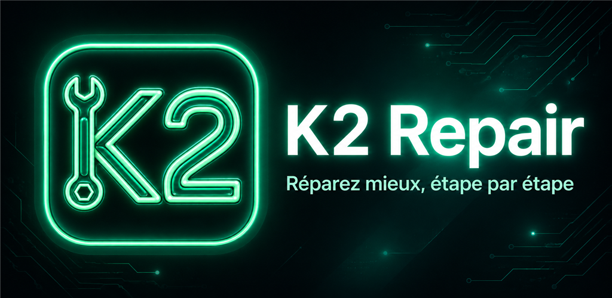
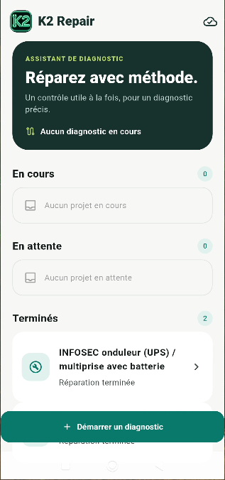
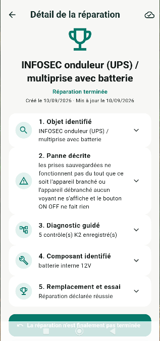

Décrire la panne
Expliquez ce que fait — ou ne fait plus — votre appareil.

Assistant de diagnostic et de réparation
Un contrôle utile à la fois, pour un diagnostic précis.
K2 Repair vous aide à comprendre une panne, à vérifier les bons points dans le bon ordre et à conserver les repères utiles pour le remontage.
Découvrir K2 Repair

Comment ça fonctionne
Une démarche simple pour garder des repères et éviter de se précipiter.
Expliquez ce que fait — ou ne fait plus — votre appareil.
K2 Repair propose un contrôle à la fois, avec des consignes adaptées et prudentes.
Le diagnostic aide à comprendre le composant ou la zone à vérifier.
Conservez vos photos repères, suivez une checklist adaptée et confirmez le résultat.
Un rôle clair
K2 Repair aide à
K2 Repair ne
Sécurité
K2 Repair rappelle les précautions essentielles : appareil hors tension, ne pas forcer, arrêter en cas de doute, de trace de brûlure, de batterie endommagée ou de risque électrique.
K2 Repair
K2 Repair vous accompagne étape par étape pour avancer plus sereinement dans vos réparations du quotidien.
Découvrir l’application